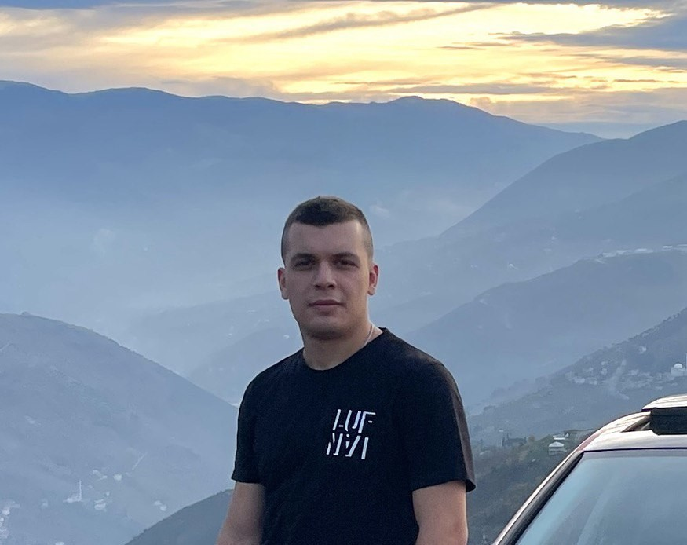

Çağatay Ozan Akşan - English
Siber Güvenlik, Spor ve Trabzonspor
Anasayfa | Hakkında | Deneyim | İletişim
Hakkında
1999 Trabzon doğumluyum. 19 yaşımdan beri siber güvenliğe meraklıyım.
Karadeniz Teknik Üniversitesi Bilgisayar Mühendisliği bölümünden mezun oldum.
Şu an Yıldız Teknik Üniversitesi Siber Güvenlik ve Kriptografi bölümünde yüksek lisans yapıyorum.

Şirkette Çalıştığım Alanlar
- Microsoft Security and Compliance. (MDM - UEM)
- Checkpoint - Harmony Mobile, Mobile Threat Defense (MTD)
- Threat Hunting and Incident Response
- Cyber Threat Intelligence (CTI)
- Security Awareness & Phishing Simulation Platforms